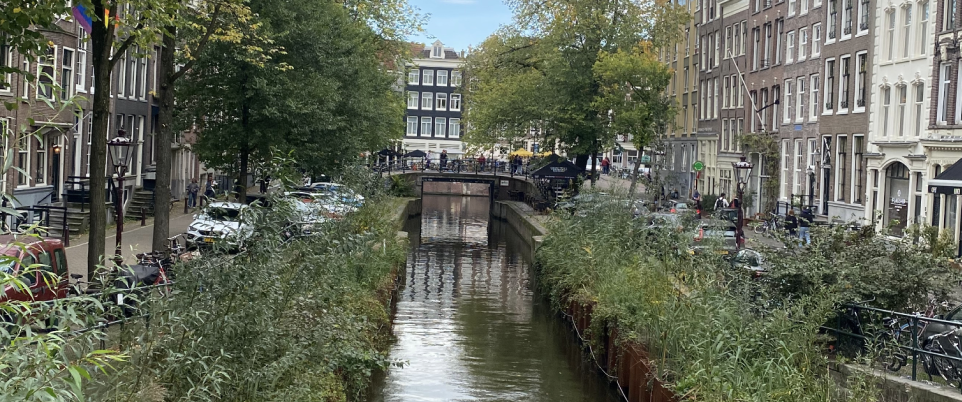

Welkom!
Bij De Groene Grachten geloven we dat duurzaamheid en historie hand in hand kunnen gaan. Samen maken we gebouwen energiezuiniger en toekomstbestendig, zonder het karakter te verliezen.
Wat doen we?
Wij helpen particulieren, bedrijven en gemeentes met slimme oplossingen zoals isolatie, zonnepanelen en warmtepompen. Onze experts begeleiden je van start tot finish.
Onze Missie
Wij streven naar een duurzame toekomst door oude en historische gebouwen op een innovatieve manier te verduurzamen. Onze missie is om bestaande gebouwen een tweede, energiezuinig leven te geven.
Hoe Werken We?
Analyse: We starten met een grondige analyse van het gebouw.
Advies op maat: We geven advies over de beste duurzame oplossingen.
Uitvoering: We begeleiden het hele proces van verduurzaming.
Resultaat: Een duurzaam gebouw dat energie bespaart en toekomstbestendig is.
Neem Contact Op
Wil je meer weten over onze werkwijze of hoe wij jou kunnen helpen? Neem gerust contact met ons op via onze contactpagina. Wij helpen je graag verder!